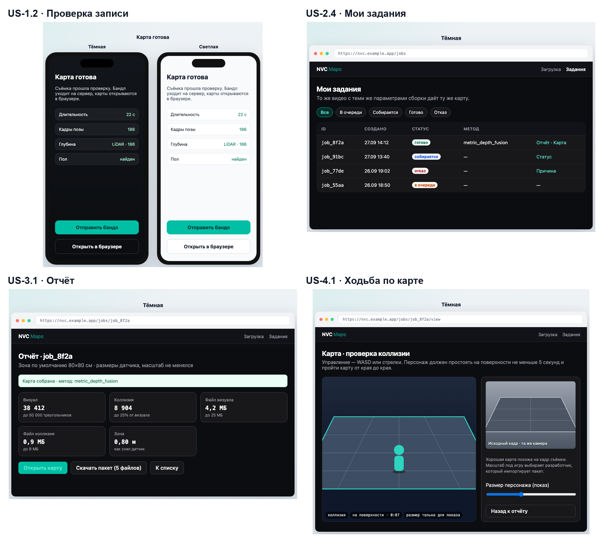

2. Требования к системе
2.1. Видение и цели
Видение
NVC Maps превращает короткое видео реального места в игровой уровень. Человек обходит небольшой участок с iPhone, а сервис сам собирает карту, по которой персонаж может ходить, проверяет её в браузере и отдаёт файлом для любого движка. Плохая съёмка получает честный отказ с причиной, а не кривую карту.
Бизнес-цели
Бизнес-цели перечислены в табл. 2.1.
Табл. 2.1. Бизнес-цели
| ID | Цель |
|---|---|
| BG-1 | Убрать ручную доводку геометрии из пути от съёмки до проходимого уровня |
| BG-2 | Сократить время от съёмки до первой проверки уровня |
| BG-3 | Не выдавать непригодную съёмку за готовую карту |
| BG-4 | Отдавать карту, которая сразу укладывается в игровой бюджет |
KPI
Достижение целей измеряется четырьмя KPI (табл. 2.2).
Табл. 2.2. KPI: базовые и целевые значения
| ID | Показатель | Базовое значение (сейчас) | Целевое значение | Как измерить |
|---|---|---|---|---|
| KPI-1 | Доля пригодных эталонных съёмок, по которым получен проходимый уровень без ручной доводки | 0%: сканеры не отдают опору для персонажа (раздел 1.3) | 100% на эталонных съёмках S1, S2 | Прогон эталонов, проверка ходьбой: персонаж стоит ≥ 5 с и проходит карту от края до края |
| KPI-2 | Время от отправки съёмки до первой проверки ходьбой | 2–4 ч по ручному пути AS-IS (оценка автора, шаги 2–5 раздела 1.1) | ≤ 15 мин | Время между отправкой и открытием карты в браузере на эталонах |
| KPI-3 | Доля непригодных съёмок, получивших отказ с причиной | 0%: сканеры выдают модель при любой съёмке | 100% на эталонных съёмках N1, N2 | Прогон эталонов, текст причины в отчёте |
| KPI-4 | Вес карты | Плотный скан: сотни тысяч треугольников; опора Marble — 100–200 тыс.6 | Визуал ≤ 50 000 треугольников; опора ≤ 25% от визуала и ≥ 100 граней | Метрики в отчёте сборки |
2.2. Стейкхолдеры и пользователи
Стейкхолдеры
Стейкхолдеры, их интерес и влияние приведены в табл. 2.3.
Табл. 2.3. Стейкхолдеры: интерес и влияние
| Стейкхолдер | Интерес | Интерес (H/M/L) | Влияние (H/M/L) |
|---|---|---|---|
| Пользователи: инди-разработчики, level-дизайнеры, авторы макетов, преподаватели и студенты | Быстро получить проходимый уровень с реального места | H | H |
| Владелец продукта и команда | Продукт снимает боль пользователей и работает без ручного вмешательства; команда ведёт сервис и тестовую ссылку | H | H |
| Apple: iOS, ARKit, LiDAR, App Store | Приложение по правилам App Store, понятный запрос доступа к камере | L | H |
| Игровые движки и стандарт glTF: Godot, Unity, Unreal, Khronos Group | Корректные файлы в открытом формате | L | H |
| Надзор за персональными данными (GDPR) | Лица и чужие помещения не попадают в данные без основания | L | H |
| Хостинг-провайдер | Ресурсы в пределах тарифа и лимитов | L | M |
| Авторы открытых библиотек и моделей: Open3D, PyTorch, Depth Anything | Соблюдение лицензий | L | M |
| Конкуренты: Polycam, Scaniverse, KIRI, RealityScan, Luma, World Labs | Задают ожидания пользователей от сканера | M | M |
| Сообщества: itch.io и гейм-джемы, курсы геймдева, Fortnite Creative, Roblox | Инструменты, которые ускоряют создание игр; канал к пользователям | M | L |
| Игрок на готовой карте | Не провалиться сквозь пол | H | L |
| Владелец снимаемого места | Знать о съёмке и иметь право отказать | H | L |
| Человек, случайно попавший в кадр | Не оказаться в чужих материалах | H | L |
С группами H/H согласуются границы релиза и критерии успеха. Правила групп L/H соблюдаются как ограничения: App Store, glTF, GDPR. Интересы групп H/L защищаются правилами продукта: проверкой ходьбой, правилами съёмки, запретом лиц крупным планом.
Пользователи системы (акторы)
- Оператор съёмки — снимает участок, проходит проверку записи, отправляет съёмку.
- Сборщик карты — следит за заданиями, читает отчёт, проходит по карте в браузере.
- Разработчик игры — скачивает пакет и забирает его в движок.
- Команда сервиса — выпускает и меняет тестовую ссылку на эталонные задания.
Обычно первые три роли выполняет один человек. Диаграмма вариантов использования — рис. П.2.4.
Персона
Персона построена по результатам анализа документов и рынка (введение, «Методы»). Её проверка на интервью вынесена в риски (R6).
Аня, 24 года, инди-разработчица. Делает небольшие игры на Godot в свободное время, участвует в гейм-джемах на 48–72 часа. 3D-модели берёт из бесплатных библиотек, в Blender работает с трудом. Есть iPhone 15 Pro.
- Цель: за пару часов джема получить уровень с настоящей фактурой, например со своего письменного стола.
- Боль: сканер даёт красивую модель, но персонаж по ней не ходит; на сборку опоры уходит вечер, которого на джеме нет.
- Как продукт помогает: обход стола за 30 секунд, проверка ходьбой в браузере, GLB сразу в Godot.
2.3. Границы проекта
Входит в релиз
- Съёмка на iPhone или iPad с LiDAR: зона около 80×80 см, обход, проверка записи, отправка на сервер.
- Сборка карты в размерах датчика: видимая модель, лёгкая опора, манифест, границы, отчёт.
- Отказ с причиной на непригодной съёмке вместо произвольной геометрии.
- Приём съёмки, очередь заданий, статус, хранение пакета.
- Браузер: загрузка съёмки, список своих заданий, отчёт, ходьба по опоре рядом с кадром съёмки, скачивание пакета.
- Вход в браузер одноразовой ссылкой с телефона; тестовая ссылка на четыре эталонных задания.
- Открытое описание обмена: что принимается и что отдаётся.
Не входит в релиз
- Полноценная игра и обязательная демонстрация в Unreal.
- Масштабирование карты под конкретного персонажа.
- Текстуры, второй уровень детализации, сплаты.
- Обучение собственной модели глубины; сборка без LiDAR влияет на релиз только как выключенный режим.
- Android как платформа релиза.
- Панель администрирования, учётные записи, роли, просмотр чужих карт.
Допущения и ограничения
Допущения и ограничения проекта приведены в табл. 2.4.
Табл. 2.4. Допущения и ограничения
| Тип | Описание | Следствие |
|---|---|---|
| Ресурсы | Продукт делает один разработчик | При нехватке времени первыми выпадают истории Should и Could (раздел 2.5) |
| Сроки | Срок первого релиза фиксирован календарём проекта | Объём ограничен Must-историями; всё остальное — после релиза |
| Устройства | Для съёмки нужен iPhone Pro или iPad Pro с LiDAR7; симулятор и браузер глубину не дают | Без устройства продукт проверяют по четырём эталонным съёмкам и тестовой ссылке |
| Доступ к данным | Используются только собственные съёмки автора и четыре эталона: две пригодные, две непригодные. Чужих датасетов нет | Согласие организаций не требуется (заявления); проверка ограничена эталонами |
| API и платформа | Глубина и позы — только через ARKit на устройстве8; формат карты — glTF 2.09 | Платформа релиза — iOS; пакет в GLB |
| Вычисления | Размер участка ограничен объёмом вычислений сервера: по умолчанию 80×80 см | Пороги качества заданы для этого размера |
2.4. Концепция решения
Решение состоит из четырёх частей (рис. П.2.3):
- Приложение съёмки на iPhone. Пишет видео, позы камеры, служебные данные и глубину LiDAR, проверяет запись и отправляет её на сервер. Адрес сервера и ключ пользователя хранятся в приложении.
- Сервис приёма. Принимает съёмку с телефона или из браузера, ставит задание в очередь, хранит задания, метрики и ссылки на файлы. Повторная отправка той же съёмки возвращает текущее задание.
- Конвейер сборки. Отдельный серверный процесс берёт задание из очереди, собирает пакет из пяти файлов и кладёт его в хранилище. При непригодной съёмке пишет отказ с причиной.
- Веб-клиент. Показывает задания этого пользователя, отчёт и ходьбу по опоре рядом с кадром съёмки. Вход — одноразовой ссылкой с телефона или многоразовой тестовой ссылкой на эталонные задания.
Внешние системы: ARKit на устройстве, хостинг с базой и хранилищем файлов, игровые движки, которые открывают пакет.
Альтернативы
Две альтернативы сравниваются в табл. 2.5.
Табл. 2.5. Сравнение альтернатив концепции
| Критерий | А. Сборка на телефоне | Б. Сборка на сервере и проверка в браузере (выбрано) |
|---|---|---|
| Вычисления | Ограничены телефоном: слияние глубины и упрощение на всём участке нагревают устройство и долго идут | Сервер собирает без ограничений устройства; размер участка настраивается |
| Повторяемость | Результат зависит от модели телефона и версии приложения | Один сборщик и одни настройки для всех съёмок |
| Проверка без телефона | Невозможна: без LiDAR-устройства продукт не проверить | Эталонные задания по тестовой ссылке |
| Проверка ходьбой | Только на телефоне, мелко и неудобно | В браузере на большом экране рядом с кадром съёмки |
| Приватность | Данные не покидают телефон | Данные хранятся на сервере: нужны правовое основание и удаление (2.8) |
| Стоимость | Нет затрат на сервер | Затраты на хостинг |
Обоснование выбора. Вариант Б выигрывает в повторяемости, проверке без устройства и удобстве проверки ходьбой. Это прямо поддерживает KPI-1–KPI-3. Минусы варианта — приватность и стоимость — закрыты требованиями 2.8 и рисками R4, R5.
2.5. Функциональные требования
Эпики
Эпики и их связь с бизнес-целями и KPI приведены в табл. 2.6.
Табл. 2.6. Эпики и их связь с целями
| Эпик | Название | Бизнес-цель | KPI |
|---|---|---|---|
| E1 | Съёмка и проверка записи | BG-3 | KPI-3 |
| E2 | Отправка и задания | BG-2 | KPI-2 |
| E3 | Сборка, отчёт и качество | BG-1, BG-3, BG-4 | KPI-1, KPI-3, KPI-4 |
| E4 | Проверка ходьбой в браузере | BG-1, BG-2 | KPI-1, KPI-2 |
| E5 | Пакет для движка | BG-1, BG-4 | KPI-1, KPI-4 |
| E6 | Ведение сервиса | BG-2 | KPI-1, KPI-3 |
Критерии приёмки записаны в формате «Дано / Когда / Тогда» (Given / When / Then). Полный бэклог одной таблицей — в приложении 1.
Макеты ключевых историй US-1.2, US-2.4, US-3.1 и US-4.1 — на рис. 2.1; все экраны — на сайте проекта.

E1. Съёмка и проверка записи
Истории эпика и критерии приёмки — в табл. 2.7.
Табл. 2.7. Истории эпика E1. Съёмка и проверка записи
| ID | История | Критерии приёмки | MoSCoW |
|---|---|---|---|
| US-1.1 | Запись зоны. Как оператор съёмки, я хочу записать участок на телефоне с LiDAR, чтобы получить съёмку с глубиной в метрах. | 1) Дано телефон с LiDAR и открытая запись, когда оператор начинает запись, тогда на полу фиксируется зона 0,8 × 0,8 м. 2) Дано запись остановлена, когда съёмка сохраняется, тогда в ней есть видео, позы камеры, служебные данные и кадры глубины. | Must |
| US-1.2 | Проверка записи до отправки. Как оператор съёмки, я хочу сразу узнать, годится ли запись, чтобы не отправлять брак и переснять на месте. | 1) Дано запись 10–30 с с путём камеры ≥ 0,28 м и поворотом ≥ 90°, когда проверка завершена, тогда показано «Готово» и кнопка «Отправить». 2) Дано запись короче 10 с, длиннее 30 с, без поз или без глубины, когда проверка завершена, тогда показана причина одной фразой и кнопка «Переснять». 3) Дано проверка не пройдена, когда оператор пытается отправить запись, тогда отправка недоступна. | Must |
| US-1.3 | Подсказка обхода. Как оператор съёмки, я хочу видеть во время записи, сколько ещё обойти, чтобы снять участок с первого раза. | 1) Дано идёт запись, когда путь камеры меньше 0,28 м или поворот меньше 90°, тогда на экране видна подсказка, что обойти ещё. | Should |
E2. Отправка и задания
Истории эпика и критерии приёмки — в табл. 2.8.
Табл. 2.8. Истории эпика E2. Отправка и задания
| ID | История | Критерии приёмки | MoSCoW |
|---|---|---|---|
| US-2.1 | Отправка с телефона. Как оператор съёмки, я хочу отправить запись на сервер одной кнопкой, чтобы сборка началась без ручной команды. | 1) Дано проверка пройдена, когда оператор нажимает «Отправить», тогда создаётся задание со статусом «в очереди». 2) Дано отправка не удалась из-за сети, когда приходит ошибка, тогда причина показана текстом и отправку можно повторить. | Must |
| US-2.2 | Загрузка из браузера. Как сборщик карты, я хочу загрузить сохранённую съёмку формой в браузере, чтобы собрать карту без телефона. | 1) Дано открыта форма загрузки, когда выбран файл без видео, поз или служебных данных, тогда до отправки показано, чего не хватает. 2) Дано состав съёмки полный, когда сборщик отправляет форму, тогда создаётся задание и открывается список заданий. | Must |
| US-2.3 | Повторная отправка без второй сборки. Как сборщик карты, я хочу, чтобы повтор той же съёмки после обрыва связи не запускал вторую сборку, чтобы в списке не было дублей и задание не висело без статуса. | 1) Дано задание по съёмке уже создано, когда та же съёмка отправлена ещё раз, тогда возвращается текущее задание, вторая сборка не стартует. 2) Дано первое задание завершилось отказом, когда съёмка отправлена ещё раз, тогда виден этот отказ с причиной. | Must |
| US-2.4 | Мои задания в браузере. Как сборщик карты, я хочу одной кнопкой с телефона открыть в браузере все свои задания, чтобы смотреть отчёты и карты на большом экране. | 1) Дано у пользователя есть задания, когда он нажимает «Открыть в браузере», тогда браузер открывает список всех его заданий с датой и статусом. 2) Дано одноразовая ссылка уже открыта или истекла, когда её открывают снова, тогда список не открывается, а телефон выдаёт новую ссылку. 3) Дано другой браузер без сессии, когда открывается адрес чужого задания, тогда карта и отчёт не показываются. | Must |
| US-2.5 | Фильтр по статусу. Как сборщик карты, я хочу отфильтровать задания по статусу, чтобы быстро найти готовые карты и отказы. | 1) Дано открыт список заданий, когда выбран фильтр «готово», тогда видны только готовые задания. | Should |
| US-2.6 | Удаление съёмки с телефона. Как оператор съёмки, я хочу удалить ненужную съёмку из «Моих карт», чтобы освободить память телефона. | 1) Дано карточка съёмки в «Моих картах», когда оператор подтверждает удаление, тогда файлы съёмки удаляются с телефона. | Could |
E3. Сборка, отчёт и качество
Истории эпика и критерии приёмки — в табл. 2.9.
Табл. 2.9. Истории эпика E3. Сборка, отчёт и качество
| ID | История | Критерии приёмки | MoSCoW |
|---|---|---|---|
| US-3.1 | Отчёт о сборке. Как сборщик карты, я хочу видеть в отчёте статус, способ построения и метрики, чтобы решать по цифрам, а не на глаз. | 1) Дано сборка завершена, когда сборщик открывает отчёт, тогда видны статус, способ построения, число треугольников визуала и опоры, размеры файлов. 2) Дано сборка успешна, когда открыт отчёт, тогда способ построения — слияние глубины LiDAR, а не заглушка. | Must |
| US-3.2 | Отказ с причиной. Как сборщик карты, я хочу получить отказ с понятной причиной на непригодной съёмке, чтобы не принять брак за карту. | 1) Дано съёмка без корректных поз или с неудачной реконструкцией, когда сборка завершается, тогда статус — «отказ» и в отчёте текст причины. 2) Дано статус «отказ», когда сборщик открывает задание, тогда геометрия-заглушка не выдаётся и скачать пакет нельзя. | Must |
| US-3.3 | Карта в игровом бюджете. Как разработчик игры, я хочу получать карту в пределах бюджета, чтобы не упрощать её вручную. | 1) Дано сборка успешна, когда пакет записан, тогда визуал ≤ 50 000 треугольников и ≤ 25 МБ. 2) Дано сборка успешна, когда пакет записан, тогда опора ≤ 25% граней визуала, ≥ 100 граней и ≤ 8 МБ. | Must |
| US-3.4 | Сравнение повторной сборки. Как сборщик карты, я хочу сравнить повторную сборку той же съёмки с первой, чтобы убедиться, что результат воспроизводится. | 1) Дано две сборки одной съёмки, когда сборщик сравнивает отчёты, тогда способ построения совпадает, а число треугольников различается не больше чем на 15%. | Should |
E4. Проверка ходьбой в браузере
Истории эпика и критерии приёмки — в табл. 2.10.
Табл. 2.10. Истории эпика E4. Проверка ходьбой в браузере
| ID | История | Критерии приёмки | MoSCoW |
|---|---|---|---|
| US-4.1 | Ходьба по карте. Как сборщик карты, я хочу пройти по готовой карте персонажем в браузере, чтобы проверить проходимость без игрового движка. | 1) Дано сборка успешна, когда сборщик открывает просмотр, тогда персонаж стоит на опоре не меньше 5 с и не проваливается. 2) Дано открыт просмотр, когда сборщик ведёт персонажа от края до края, тогда персонаж проходит карту целиком. | Must |
| US-4.2 | Кадр съёмки рядом с картой. Как сборщик карты, я хочу видеть рядом с моделью кадр съёмки, чтобы сравнить карту с реальным местом. | 1) Дано открыт просмотр, когда карта загружена, тогда рядом виден кадр съёмки с той же камеры. | Must |
| US-4.3 | Рост персонажа при показе. Как сборщик карты, я хочу менять рост персонажа в просмотре, чтобы примерить карту под разные игры. | 1) Дано открыт просмотр, когда сборщик меняет рост персонажа, тогда персонаж меняется, а геометрия карты и файлы пакета — нет. | Should |
E5. Пакет для движка
Истории эпика и критерии приёмки — в табл. 2.11.
Табл. 2.11. Истории эпика E5. Пакет для движка
| ID | История | Критерии приёмки | MoSCoW |
|---|---|---|---|
| US-5.1 | Скачивание пакета. Как разработчик игры, я хочу скачать пакет из пяти файлов, чтобы открыть карту в своём движке. | 1) Дано сборка успешна, когда разработчик нажимает «Скачать», тогда он получает map.glb, collision.glb, manifest.json, bounds.json, report.json. 2) Дано пакет скачан, когда оба GLB открываются в просмотрщике glTF, тогда они открываются без ошибок. |
Must |
| US-5.2 | Настоящие размеры и описание пакета. Как разработчик игры, я хочу получать карту в метрах датчика с описанием осей, чтобы самому выставить масштаб персонажа. | 1) Дано пакет скачан, когда разработчик читает манифест, тогда там указаны метры, ось Y вверх и факт центрирования. 2) Дано пакет собран, когда сравниваются размеры карты и съёмки, тогда масштаб геометрии не менялся. | Must |
| US-5.3 | Инструкция для Godot. Как разработчик игры, я хочу короткую инструкцию, как открыть пакет в Godot, чтобы не разбираться с импортом самому. | 1) Дано открыт отчёт, когда разработчик переходит по ссылке «Как открыть в Godot», тогда видны шаги импорта визуала и опоры. | Should |
E6. Ведение сервиса
Истории эпика и критерии приёмки — в табл. 2.12.
Табл. 2.12. Истории эпика E6. Ведение сервиса
| ID | История | Критерии приёмки | MoSCoW |
|---|---|---|---|
| US-6.1 | Тестовая ссылка на эталоны. Как команда сервиса, я хочу выпустить многоразовую ссылку на четыре эталонных задания, чтобы продукт можно было проверить без телефона с LiDAR. | 1) Дано выпущена тестовая ссылка, когда её открывают в любом браузере, тогда видны только четыре эталонных задания с отчётами и ходьбой. 2) Дано открыта тестовая ссылка, когда смотрят список, тогда личные задания пользователей не видны. | Must |
| US-6.2 | Замена тестовой ссылки. Как команда сервиса, я хочу заменить тестовую ссылку, чтобы закрыть доступ по старой. | 1) Дано ссылка заменена, когда открывают старую, тогда задания не открываются. | Must |
Приоритеты
Сводка приоритетов приведена в табл. 2.13.
Табл. 2.13. Приоритеты MoSCoW
| Приоритет | Истории | Почему |
|---|---|---|
| Must | US-1.1, US-1.2, US-2.1–US-2.4, US-3.1–US-3.3, US-4.1, US-4.2, US-5.1, US-5.2, US-6.1, US-6.2 | Без них не достигаются KPI-1–KPI-4 |
| Should | US-1.3, US-2.5, US-3.4, US-4.3, US-5.3 | Улучшают удобство и проверку; первыми выпадают при нехватке времени |
| Could | US-2.6 | Мелкое удобство на телефоне |
| Won't | Полноценная игра, обязательный Unreal, своя модель глубины, Android, панель администрирования и учётные записи, масштабирование карты | Вне границ релиза (2.3) |
Трассировка «цель → эпик → история»
Связь целей, эпиков и историй показана в табл. 2.14.
Табл. 2.14. Трассировка «цель → эпик → история»
| Цель | KPI | Эпик | Истории |
|---|---|---|---|
| BG-1 Без ручной доводки | KPI-1 | E3, E4, E5 | US-3.1, US-3.3, US-4.1, US-4.2, US-5.1, US-5.2 |
| BG-2 Быстрее до проверки | KPI-2 | E2, E4, E6 | US-2.1–US-2.5, US-4.1, US-6.1, US-6.2 |
| BG-3 Честный отказ | KPI-3 | E1, E3 | US-1.1–US-1.3, US-3.2 |
| BG-4 Игровой бюджет | KPI-4 | E3, E5 | US-3.3, US-3.4, US-5.2 |
2.6. Сценарии использования
UC-1. Снять и отправить участок
- Актор: оператор съёмки.
- Предусловие: iPhone или iPad с LiDAR, приложение установлено, доступ к камере разрешён.
- Результат: задание на сборку создано и стоит в очереди.
Основной поток
- Оператор открывает «Сканировать» и наводит телефон на пол.
- Система показывает рамку зоны 0,8 × 0,8 м.
- Оператор начинает запись и обходит зону 10–30 с.
- Оператор останавливает запись.
- Система проверяет длительность, путь, поворот, позы и глубину и показывает «Готово».
- Оператор нажимает «Отправить».
- Система передаёт съёмку на сервер; сервер создаёт задание и возвращает его статус «в очереди».
Альтернативный поток A1. Проверка не пройдена. На шаге 5 система показывает причину одной фразой и «Переснять». Оператор возвращается к шагу 1. Отправка этой записи недоступна.
Альтернативный поток A2. Обрыв связи при отправке. На шаге 7 связь обрывается. Оператор нажимает «Отправить» ещё раз. Сервер узнаёт съёмку и возвращает уже созданное задание; вторая сборка не стартует.
Диаграмма активности сценария — рис. П.2.6.
UC-2. Проверить карту в браузере
- Актор: сборщик карты.
- Предусловие: у пользователя есть хотя бы одно отправленное задание; приложение на телефоне хранит его ключ.
- Результат: сборщик прошёл по карте и скачал пакет.
Основной поток
- Сборщик нажимает на телефоне «Открыть в браузере».
- Система выдаёт одноразовую ссылку и открывает браузер.
- Система по ссылке создаёт сессию и показывает список заданий пользователя.
- Сборщик открывает готовое задание; система показывает отчёт.
- Сборщик открывает просмотр; система загружает опору и кадр съёмки.
- Сборщик проходит персонажем от края до края.
- Сборщик нажимает «Скачать»; система отдаёт пакет из пяти файлов по короткой ссылке.
Альтернативный поток A1. Ссылка истекла. На шаге 3 ссылка уже открыта или истекла. Система показывает пустой вход. Сборщик возвращается к шагу 1, телефон выдаёт новую ссылку.
Альтернативный поток A2. Сборка завершилась отказом. На шаге 4 статус — «отказ». Система показывает причину; просмотр и скачивание недоступны. Сборщик переходит к UC-1, чтобы переснять участок.
Системная диаграмма последовательности для UC-1 и UC-2 — рис. П.2.5.
2.7. Нефункциональные требования
Нефункциональные требования с измеримыми показателями приведены в табл. 2.15.
Табл. 2.15. Нефункциональные требования
| ID | Категория | Требование | Показатель и значение | KPI, истории |
|---|---|---|---|---|
| NFR-1 | Производительность | Сборка эталонной съёмки | ≤ 10 мин от постановки в очередь до статуса «готово» или «отказ» | KPI-2; US-2.1, US-3.1 |
| NFR-2 | Производительность | Открытие просмотра карты | ≤ 10 с до управления персонажем на канале 50 Мбит/с | KPI-2; US-4.1 |
| NFR-3 | Производительность | Размер файлов пакета | map.glb ≤ 25 МБ, collision.glb ≤ 8 МБ |
KPI-4; US-3.3 |
| NFR-4 | Надёжность | Повторяемость сборки | Тот же способ построения, расхождение по треугольникам ≤ 15% | KPI-1; US-3.4 |
| NFR-5 | Безопасность | Доступ к заданиям | Список, отчёт, просмотр и файлы отдаются только сессии владельца: 0 успешных открытий чужого задания в проверке | US-2.4, US-6.1 |
| NFR-6 | Безопасность | Срок жизни ссылок | Одноразовая ссылка действует 1 раз и ≤ 10 мин; ссылка на файл — ≤ 15 мин | US-2.4, US-5.1 |
| NFR-7 | Безопасность | Секреты | 0 паролей и ключей в образе сервиса и репозитории; секреты задаёт хостинг | — |
| NFR-8 | Доступность сервиса | Время работы | ≥ 99% за календарный месяц по внешнему мониторингу | KPI-2 |
| NFR-9 | Удобство | Веб-клиент | Соответствие WCAG 2.1 AA10: контраст текста ≥ 4,5 : 1, все формы проходятся с клавиатуры | US-2.2, US-2.4 |
| NFR-10 | Удобство | Телефон | Зоны нажатия ≥ 44 pt; причина отказа — одна фраза ≤ 120 символов | US-1.2 |
2.8. Правовые и этические требования
Персональные данные
Какие данные могут быть персональными и на каком основании они обрабатываются, показано в табл. 2.16.
Табл. 2.16. Персональные данные и основания обработки
| Данные | Почему могут быть персональными | Основание по GDPR11 | Требование |
|---|---|---|---|
| Ключ пользователя на телефоне | Псевдонимный идентификатор человека | Ст. 6(1)(b): исполнение услуги по запросу пользователя | Ключ не связывается с именем, почтой или телефоном |
| Видео и глубина участка | В кадр может случайно попасть человек или чужое помещение | Ст. 6(1)(b) для автора съёмки; ст. 6(1)(f), законный интерес, для случайных людей в кадре | Снимается только пол, стол или макет; запись с лицом крупным планом не публикуется; звук для сборки не нужен и не хранится |
| IP-адреса в журналах сервера | Сетевой идентификатор | Ст. 6(1)(f): безопасность сервиса | Журналы хранятся ≤ 30 дней |
- Минимизация и сроки. Съёмки и пакеты хранятся ≤ 90 дней с последнего открытия, затем удаляются.
- Право на удаление (ст. 17). Пользователь может запросить удаление своих заданий по почте, указанной на сайте. Запрос исполняется ≤ 30 дней по номеру задания. Отдельной панели для этого нет (2.3).
- Прозрачность (ст. 13). В приложении и на сайте есть короткое уведомление: какие данные собираются, зачем, сколько хранятся и как удалить.
- Владелец места. Пользователь подтверждает, что снимает своё место или место с разрешения владельца.
Согласие участников интервью
Интервью и опросы в работе не проводились (введение, «Методы»). Согласие участников не требуется. Если интервью будут проведены для проверки персон (R6), участники подписывают согласие на запись и обработку ответов.
Лицензии
Open3D1 и trimesh — MIT, PyTorch — BSD-3-Clause: используются с сохранением уведомлений об авторском праве. Из моделей Depth Anything V22 используется только Small под Apache-2.0; более крупные модели с некоммерческой лицензией не используются. glTF 2.03 — открытый стандарт без отчислений. Эталонные съёмки сделаны автором, права третьих лиц не затрагиваются.
Стандарты
- WCAG 2.1 AA4 для веб-клиента (NFR-9).
- glTF 2.05 для пакета карты (US-5.1, US-5.2).
- App Store Review Guidelines: понятное описание, зачем приложению камера.
2.9. Риски
Риски проекта оценены в табл. 2.17.
Табл. 2.17. Риски проекта
| ID | Риск | Вероятность | Влияние | Снижение | Зависимость |
|---|---|---|---|---|---|
| R1 | Карта получается неузнаваемой или с дырами | M | H | Небольшая зона, обязательные позы и глубина, отказ вместо произвольной геометрии | Качество LiDAR12, алгоритмы слияния13 |
| R2 | Опора не держит персонажа | M | H | Проверка ходьбой до выдачи пакета; бюджет опоры не меньше 100 граней | US-4.1, US-3.3 |
| R3 | Нет телефона с LiDAR у проверяющего или пользователя | H | M | Четыре эталонные съёмки и тестовая ссылка | US-6.1; доступ к устройствам (2.3) |
| R4 | Сборка требует больше ресурсов, чем даёт хостинг | M | M | Настраиваемый размер зоны, ограничение числа кадров, очередь | Хостинг-провайдер |
| R5 | Персональные данные попадают в кадр или хранятся дольше нужного | L | H | Правила съёмки, срок хранения 90 дней, удаление по запросу | Требования 2.8, GDPR14 |
| R6 | Персона и боли не совпадают с реальными пользователями: интервью не проводились | M | H | Проверить персону на 5 интервью с инди-разработчиками до следующего релиза; следить за KPI | Методы (введение) |
| R7 | Изменятся правила App Store или API ARKit | L | H | Следить за обновлениями Apple; формат съёмки описан открыто, и бандл можно загрузить из браузера | Apple |
Вероятность и влияние: H — высокое, M — среднее, L — низкое.
2.10. Выводы по главе
Что зафиксировано в требованиях. Видение и четыре бизнес-цели с KPI, базовыми и целевыми значениями. Стейкхолдеры и акторы, персона. Границы релиза, допущения и ограничения. Концепция решения с контекстной диаграммой и обоснованием выбора. Шесть эпиков и 21 user story с приоритетами MoSCoW и критериями приёмки в формате «Дано / Когда / Тогда». Два сценария использования с альтернативными потоками и диаграммой последовательности. Десять измеримых NFR, правовые требования, семь рисков.
Как проверяется результат. Критерии оценки совпадают с KPI раздела 2.1 и проверяются на четырёх эталонных съёмках по тестовой ссылке:
- KPI-1: эталоны S1 и S2 дают проходимый уровень без ручной доводки — ходьба ≥ 5 с и от края до края (US-4.1).
- KPI-2: от отправки до проверки ходьбой ≤ 15 мин (NFR-1, NFR-2).
- KPI-3: эталоны N1 и N2 получают отказ с текстом причины (US-3.2).
- KPI-4: визуал ≤ 50 000 треугольников, опора ≤ 25% и ≥ 100 граней, файлы в пределах NFR-3 (US-3.3).
Релиз не принимается, если успех получен подстановкой заглушки, карта доводится вручную после сборки, геометрия масштабируется, персонаж проваливается сквозь опору или непригодная съёмка завершилась успехом.
-
Qian-Yi Zhou, Jaesik Park, and Vladlen Koltun, “Open3D: A Modern Library for 3D Data Processing,” preprint, arXiv:1801.09847, 2018. ↩
-
Lihe Yang et al., “Depth Anything V2,” in Advances in Neural Information Processing Systems (NeurIPS) (2024). ↩
-
Khronos Group, “glTF 2.0 Specification.” ↩
-
W3C, “WCAG 2.1.” ↩
-
Khronos Group, “glTF 2.0 Specification.” ↩
-
World Labs, “Marble: Export Mesh,” documentation, accessed October 19, 2026, https://docs.worldlabs.ai/marble/export/mesh. ↩
-
Apple Inc., “Models with a LiDAR Scanner,” Apple Support, accessed October 19, 2026, https://support.apple.com/en-gb/guide/ipad/aside/ipad8a95fdc0/ipados. ↩
-
Apple Inc., “RoomPlan,” Apple Developer, accessed October 19, 2026, https://developer.apple.com/augmented-reality/roomplan. ↩
-
Khronos Group, “glTF 2.0 Specification,” 2021, accessed October 19, 2026, https://registry.khronos.org/glTF/specs/2.0/glTF-2.0.html. ↩
-
W3C, “Web Content Accessibility Guidelines (WCAG) 2.1,” W3C Recommendation, June 5, 2018, accessed October 19, 2026, https://www.w3.org/TR/WCAG21/. ↩
-
European Parliament and Council of the European Union, “Regulation (EU) 2016/679 (General Data Protection Regulation),” Official Journal of the European Union L 119 (May 4, 2016): 1–88. ↩
-
Gregor Luetzenburg, Aart Kroon, and Anders A. Bjørk, “Evaluation of the Apple iPhone 12 Pro LiDAR for an Application in Geosciences,” Scientific Reports 11 (2021): art. 22221. ↩
-
Richard A. Newcombe et al., “KinectFusion: Real-Time Dense Surface Mapping and Tracking,” in Proceedings of the 10th IEEE International Symposium on Mixed and Augmented Reality (ISMAR) (2011), 127–36; Brian Curless and Marc Levoy, “A Volumetric Method for Building Complex Models from Range Images,” in Proceedings of the 23rd Annual Conference on Computer Graphics and Interactive Techniques (SIGGRAPH) (1996), 303–12. ↩
-
GDPR. ↩